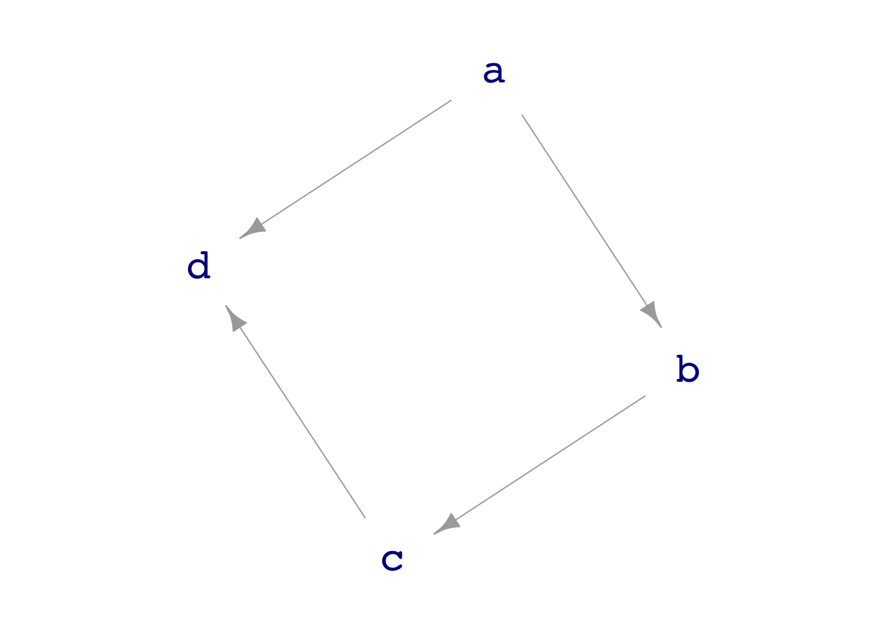

lm(height ~ mother + father + sex, data=Galton) |> coefficients()(Intercept) mother father sexM
15.3447600 0.3214951 0.4059780 5.2259513 Math300Z
Daniel Kaplan
March 8, 2023
(Intercept) mother father sexM
15.3447600 0.3214951 0.4059780 5.2259513 Question: Are fathers more influential on the children’s height than mothers?
But statisticians don’t regard the sample statistics in (1) as completely informative because we know, in our hearts, that the particular sample we worked with is just one of many, many samples that we might have collected. Each of those hypothetical samples has its own sample statistic, which likely differs from the sample statistic we calculated in (1). This is what we mean by sampling variability.
We can say that sampling variability implies that our sample statistics are noisy, that they are not absolutely precise.
We describe the precision of a sample statistic via a confidence interval, which can be in either of two forms, e.g.:
\([56.3, 57.1]\) or \(56.7 \pm 0.4\)
There are mathematical techniques that allow us to get a handle on the precision of a sample statistic using just the sample at hand. Here is the central mathematical fact:
Width of confidence interval is proportional to \(1/\sqrt{n}\).
Let’s demonstrate this using simulations (via DAGs).
# A tibble: 3 × 5
term .lwr .coef .upr width
<chr> <dbl> <dbl> <dbl> <dbl>
1 (Intercept) -0.0588 0.0345 0.128 0.187
2 c 0.919 0.984 1.05 0.130
3 a 0.868 0.980 1.09 0.223Here, the width of each term is subject, like everything else, to sampling variation.
We can average over many trials to reduce the sampling variation.
{do(500) * {
sample(dag06, size=100) |>
lm(d ~ c + a, data=_) |>
conf_interval() |>
mutate(width = .upr - .lwr)}
} |>
group_by(term) %>%
summarize(ave_width = mean(width))# A tibble: 3 × 2
term ave_width
<chr> <dbl>
1 (Intercept) 0.401
2 a 0.495
3 c 0.286Try this for different sample sizes: 25, 100, 400.
What will be the width of the confidence interval when the sample size is 1600?
lm(height ~ mother + father + sex, data=sample(Galton, size=18)) |>
conf_interval() |>
select(term, .coef)# A tibble: 4 × 2
term .coef
<chr> <dbl>
1 (Intercept) 15.6
2 mother 0.224
3 father 0.474
4 sexM 6.04 {do(500) * {
lm(height ~ mother + father + sex, data=sample(Galton, size=18)) |>
conf_interval() |>
select(term, .coef)
}} |>
group_by(term) |>
summarize(var_coef = var(.coef))# A tibble: 4 × 2
term var_coef
<chr> <dbl>
1 (Intercept) 508.
2 father 0.0607
3 mother 0.0710
4 sexM 1.21 We can look at any of the coefficients. Let’s use sexM for the example.
The sampling variance of the sexM coefficient for a sample of size \(n=18\) is 1.14 inches2.
Check this against the calculation:
# A tibble: 4 × 5
term .lwr .coef .upr width
<chr> <dbl> <dbl> <dbl> <dbl>
1 (Intercept) 9.95 15.3 20.7 10.8
2 mother 0.260 0.321 0.383 0.123
3 father 0.349 0.406 0.463 0.115
4 sexM 4.94 5.23 5.51 0.565What does this report tell you about whether fathers contribute more to children’s height than mothers? Compare the confidence interval on
motherandfather.
In the case of our model y ~ x + a on data simulated from dag02 we can compare the model coefficients to the formula for y in the DAG.

a ~ exo()
b ~ a + exo()
c ~ b + exo()
d ~ c + a + exo()# A tibble: 3 × 4
term .lwr .coef .upr
<chr> <dbl> <dbl> <dbl>
1 (Intercept) -0.338 0.132 0.602
2 c 0.687 0.970 1.25
3 a 0.705 1.27 1.84 The coefficients are a close match to the DAG formula.
If I repeat this simulation many times, roughly one time in twenty the actual formula coefficient will be outside the confidence interval. (Do the trials.)
Make the sample size very large so that we get a very narrow confidence interval to demonstrate the accuracy.
From the above, predict what sample size is needed to get a confidence interval that is about 0.01 wide. (The CI on
xfor example, is has width about 1. To get 0.01 we need 1002 as much data.)
# A tibble: 3 × 4
term .lwr .coef .upr
<chr> <dbl> <dbl> <dbl>
1 (Intercept) -0.00243 0.00150 0.00543
2 c 0.998 1.00 1.00
3 a 0.994 0.998 1.00 More data buys better precision. But accuracy is a different matter altogether. The above model is both precise and accurate.
Here is a model that is very precise, but not at all accurate:
# A tibble: 2 × 4
term .lwr .coef .upr
<chr> <dbl> <dbl> <dbl>
1 (Intercept) -0.00593 -0.000862 0.00420
2 c 1.33 1.33 1.34 What is it that tells you the precision of the coefficients?
What is it that tells you the coefficient on
cis not accurate?
Statistics texts tend to feature simple models without covariates.
Obviously, the choice of covariates or other model terms is not an issue. Sample statistics are designed mathematically so that they are accurate. This is called being unbiased.
But in cases of actual interest, where we are interested in causal connections, we generally cannot know from our data whether the sample statistic is accurate.
Collecting more data will not help us determine the accuracy; more data improves precision but not accuracy.
Later, in Lesson 30, we can return to accuracy. There, we’ll look at accuracy with respect to a DAG, choosing covariates so that the model would be accurate if the data were indeed generated by a mechanism well represented by our DAG.